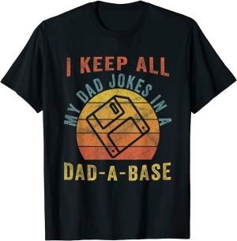
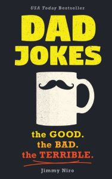
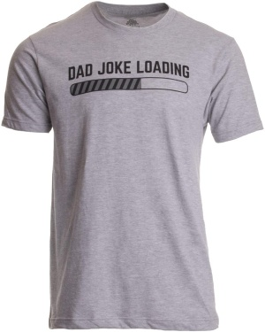

Dad Jokes Merchandise Store
Years ago, we were on a family road trip and silence permeated the interior of our Suburban. The monotonous hours of driving had taken their toll. Game play had ended hours before, excited talk about our destination had waned and a sense of boredom pervaded. Just then, we passed a sign indicating the approach of a large dam, informing travelers of daily guided tours. All I asked was “Want to take a dam tour?” Laughter exploded in the car and excitement returned. Jokes about “the dam gift shop”, “the dam tour guide”, and whether there would be “dam snacks” available filled car and brought life back into the once lifeless space. We talked and made more jokes for several hours until we finally arrived at our destination. Today, we cannot pass by a dam without those jokes being repeated…and we all laugh.
Here are a few of our favorite Dad Joke memorabilia you can purchase
(Note: clicking 'Buy' will take you to Amazon)
I Keep All My Dad Jokes In A Dad-A-Base | Vintage Father Dad T-Shirt
- Solid colors: 100% Cotton; Heather Grey: 90% Cotton, 10% Polyester; All Other Heathers: 50% Cotton, 50% Polyester
- This design features a saying that reads "I Keep All Of My Dad Jokes In a Dad-A-Base Vintage" and it is made for dads that can't help themselves and are always telling awkward jokes. Awesome gift idea for Father's Day or for your dad's birthday!
- This is a perfect gift for Father's Day but it is a great everyday garment for men who always have their dad jokes ready for every occasion. Grab this for yourself or for your dad as a hilarious gift. Perfect for classy people who love jokes and puns.
- Lightweight, Classic fit, Double-needle sleeve and bottom hem
World's Best Dad Jokes Collection | Over 600 of the Best Jokes Around
- With over 600 knee-slappers, head-shakers, and groan-makers, Dad Jokes is packed with enough witty quips and cheesy-but-grate jokes for even the most embarrassing of dads. Perfect for the father experts, new dads, and all the fathers-to-be, this is the ideal funny gift from any daughter, son, wife, or partner that celebrates how great (terrible) their jokes truly are! But remember―you don't have to be a dad to tell dad jokes! Be prepared for the obvious, silly, and awkward in this massive collection of the best groan-worthy dad jokes around, including clever quips, overly literal dialogue, and punny one-liners. Great for Father's Day, Christmas, white elephant, birthdays, and more!
Dad Joke Loading | Funny Father's Day Bad Pun Humor T-Shirt
- 90% Cotton, 10% Polyeste
- Made in USA and Imported | Machine Wash
- MICHIGAN ARTISTS & PRINTERS | this design was drawn and screen printed (silk screened) with pride by our skilled illustrators and printers in Ann Arbor. If you're ever in the area, stop by for a free tour and see how we make your apparel! Tagless tag is printed on fabric inside collar, you can't feel it.
- Unisex Modern Fit Sizing
- Top Quality Ink